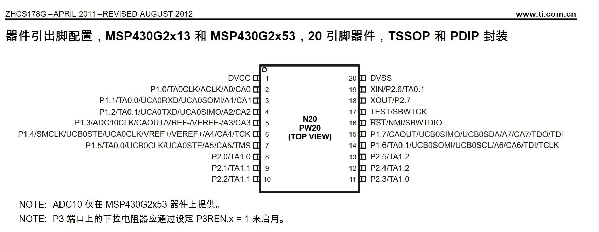
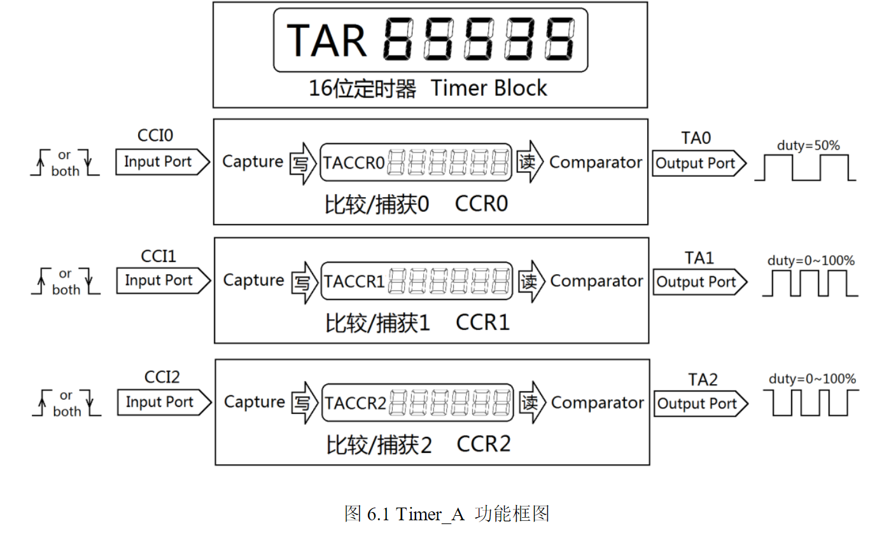
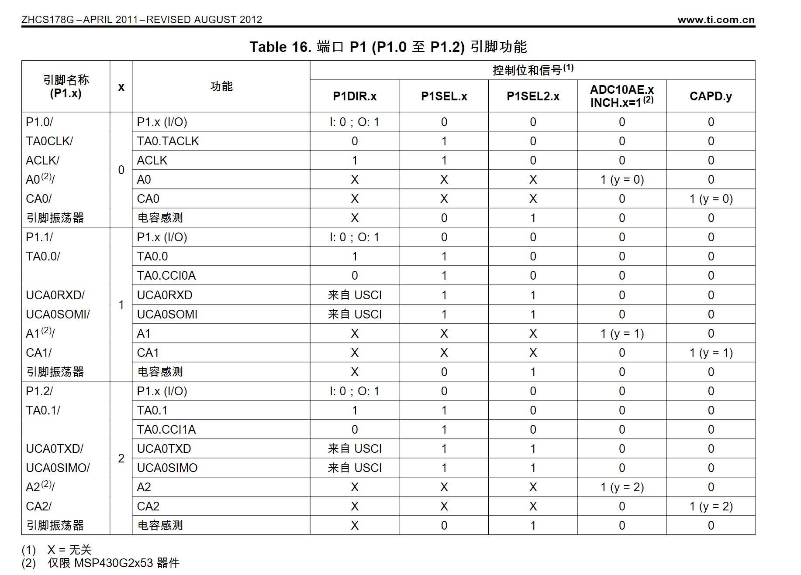

msp430g2频率计
可以测频率和脉宽，用的Timer_A的捕获模式
先上pinmap
g2553有两个的timer_A模块，每一个包括1个16位定时器和3个捕获比较模块（CCRX）。（网上误人子弟把g2通用手册的timerA和timerB截图放上去说2553有timerA和timerB，不要信。要看看底下这个官网的datesheet里的图，而不是看通用的那种用户手册）



g2553的timer_A模块包括1个16位定时器和3个捕获比较模块（CCRX），定时器就搁那计数就完了，计数值被存放在TAR寄存器。配置就这个
那边CCRx比较捕获模块，CCR0，CCR1，CCR2性质基本一样，
在比较的时候用TAR与TACCRx对比，计数到对比一致时对应的CCIFG置位。
在捕获的时候把TAR存入TACCRx，把对应的CCIFG置位。
不能同时捕获和比较。配置就这个
TAR与TACCRx就是放数字的16位寄存器
但是：CCR0是特殊的。 特殊在于：TACCR0 CCIFG 有自己单独的中断向量TACCR0 而且优先级最高。
而其他的CCIFG(指的是比较捕获模块CCR1 CCR2)和 TAIFG（溢出中断）都用一个中断向量TAIV。想分别是哪个CCIFG还是说TAIFG触发的这个中断，还需要查TAIV(寄存器用户指南371页)，像IO中断那样 （由于有两个定时器所以查的时候是TA0IV这样）
为什么搞特殊 ，因为CCR0就是用来控制timerA的定时器模块的周期的。
也就是说整个timerA两大部分，一边是定时器模块一边是比较捕获模块，
在上数模式下CCR0可以确定定时器模块的周期从0-2000增计数，那就会0-2000，然后0-2000雷打不动的计（虽然最高的65535但是CCR0定了就确定他到CCR0设置的那个点了就会按照设定的增/减/增减模式 走）
而CCR1 和CCR2 只是说自己利用这个计数器，到了什么点，比如比较模式就比较计数器记的数有没有到自己要求的那个TACCR1值，到了就自己找个小旗子记一下（即CCIFG1置位。）
溢出中断就是定时器模块的溢出中断的，依赖于定时器模块最后的模式。
就是比如在上数模式下从TACCR0的2000满了，重新到0，这就记一个溢出中断TAIFG
在连续模式下，计数到65535就溢出，重新到0，这也记一个溢出中断TAIFG。
比较模式一般用于输出，就计数计到多少翻转电平之类的，用于输出PWM.输出的方式啥的看比较捕获控制寄存器的outmode （看寄存器手册362页）
捕获模式捕获的哪一个端口的看CCIS选的是CCIxA还是CCIxB

哪个端口是CCIxA还是CCIxB 看寄存器用户手册会让我们看data sheet 。反正就 要看哪个脚复用成哪个功能就看数据手册，寄存器就看用户手册。不会写代码就看指导书或者官网。
可以看到TA0 的CCI0A在P1.1 CCI1A在P1.2 其他的看data sheet把 今天就用这个CCR1比较捕获模块的A口，即P1.2。想复用的话，P1SEL的BIT2要置1，P1SEL2的不能置1.
总结一遍：G2553有两个定时器即为timer0_A和timer1_A，每一个由一个定时器模块(溢出中断TAIFG) 和 三个比较捕获模块(CCR0，CCR1，CCR2组成，其中CCR0在非连续模式下用来设置定时器模块的周期)。
板载资源用了timer0的CCR1的CCI1A 即TA0.1的 A口 P1.2
下面这个代码是65535默认周期，CCR1捕获，连续计数上升沿捕获。方法图如下

#include <msp430.h>
unsigned int temp1=0,temp2=0,temp3=0,temp4=0;time1=0,time2=0,time3=0,time4=0;
unsigned int cap_flag=0;
int overflow=0;
long hz=0,maikuan=0;
int main(void)
{
WDTCTL = WDTPW | WDTHOLD; // Stop watchdog timer
BCSCTL1 = CALBC1_16MHZ;
DCOCTL = CALDCO_16MHZ;
//P1.2 通用型数字 I/O 引脚
//TA0.1 Timer0_A，捕捉：CCI1A 输入，比较：Out1 输出
P1SEL|=BIT2;//1.2开第二功能，没有动P1SEL2，P1SEL2也置1那就复用成uart模式了
P1DIR&=~BIT2;//1.2设为读
TA0CTL|=TASSEL_2+MC_2+ TACLR+TAIE;
//smclk 16Mhz,不分频,连续计数,置位，开溢出中断
TA0CCTL1|=CM_1+CCIE+CAP+CCIS_0;//上升沿捕获，捕获使能
_EINT();
while(1);
}
#pragma vector=TIMER0_A1_VECTOR// 响应CCR1的CCIFG CCR2的CCIFG 和溢出中断TAIFG
__interrupt void Timer0_A1(void)
{
switch( TA0IV ) //查TAIV看是哪个中断响应
{ case 2:
cap_flag++; //CCR1的CCIFG
if(cap_flag==1)//第一次检测的是上升沿
{ overflow=0;
TA0CCTL1&=~CM_1;
TA0CCTL1|=CM_2;//改成下降沿捕获
TA0CTL|= TACLR; //清定时器
}
if(cap_flag==2)//这次捕获的是下降沿
{ temp1=TA0CCR1;
time1=overflow;
TA0CCTL1&=~CM_2;
TA0CCTL1|=CM_1;//改成上升沿捕获
}
if(cap_flag==3)//这次是上升沿捕获
{
temp2=TA0CCR1;
time2=overflow;
hz=16000000/(time2*65536+temp2); //第二次计数的ccr1会经过可能一些周期，所以记得overflow*65536
maikuan=((time1*65536+temp1)*100)/(time2*65536+temp2);
cap_flag=0;
}
break;
case 4:
break;
case 10: overflow++;//溢出中断的TAIFG,溢出一次加1
break;
}
}
//这里遇到了一个问题，就是配置CCTL|=CM_1之后，想要改为CM_2,要先&=~CM_1，再|=CM_2
//不然先|=CM_1,和010000……或 再|=CM_2,和10000……或，合起来就是11000……，也就是配置成了CM_3上下沿都捕获
效果如图，输入是占空比30%，频率900hz的矩形波

版权声明：本博客所有文章除特殊声明外，均采用 CC BY-NC 4.0 许可协议。转载请注明出处 做秧歌star的女人